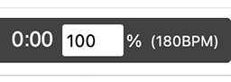

Play ABC tunes with synchronized notation, D tin whistle tablature, and live whistle fingerings.
Preparing notation…
Export the current notation pane. Complete stave and tablature systems stay together on the same page.
The PDF tune title will link to the ABC Transcription Tools Player.
Version 5.1
Overview
Load ABC tunes to play them with synchronized notation, optional whistle tablature, and a large live fingering display.
Select the key of your whistle using the Whistle Key dropdown.
The range is from D (High) through D (Low) in semitone steps; your selection is remembered on this device.
Demo Videos
Notation Display: Playing Modes
Use Notation Display to choose how the tablature and playback work.
Notation Only: Shows standard notation without whistle tablature. Audio behaves as in Shift Pitch mode.
Notes + Tab (Shift Pitch): Shows familiar D-whistle fingerings, whatever whistle key you select. The melody and accompaniment transpose to match your whistle, so you can use the same fingerings while playing along at the whistle's pitch.
Optimize Key is available only in this mode. It analyzes the tune's notes and offers an easier key when that can reduce half-holing or improve the playable range using D-whistle fingerings. The button is enabled only when a useful improvement is found. Click Clear Optimize to return to the original key.
Notes + Tab (Original Pitch): Keeps the tune's written key and notation unchanged. The tablature and large diagram show how to play its notes on your selected whistle. For example, written G on a G whistle uses the same fingering as low D on a D whistle.
The player chooses a consistent melody octave suited to the tune and whistle, favoring the lower register when practical. Notes below the whistle's range are folded up an octave; the fingerings and melody audio match the resulting pitches.
Keep in mind that the suggested fingerings are a starting point, not necessarily the best musical interpretation.
Depending on the melody, you may find that individual notes or entire passages sound better played an octave higher, even when the lower fingerings are available.
Suggest Whistle is available only in this mode.
Click Suggest Whistle in the ABC editor header to see the tune's title, starting key and mode, and three suggested whistle keys.
Each suggestion counts notes folded up an octave and notes that may require half-holing.
Whistles needing notes above the second-octave xoo ooo+ fingering (B5 on high D, or its equivalent on another whistle) rank lower, particularly for whistles other than high D.
A few folded notes may be easier to manage than half-holed or unusually high notes.
High and low D use the same fingerings, so only high D is included in the suggestions.
Click Use beside a suggested whistle key to select it, or Close to keep your current choice. Your tune is not changed.
Opening and Selecting Tunes
Type or paste a single tune into the ABC editor, open an .abc or .txt file containing one or more tunes, or send tunes directly from ABC Transcription Tools.
For multi-tune files, use the Tune menu to select the tune to display and play. Edits are retained when changing tunes.
The ABC editor intentionally accepts only one pasted tune at a time; multi-tune collections should be opened as a file or transferred from ABC Transcription Tools.
ABC Editing and Notation
The upper-left pane contains editable ABC; the lower-left pane contains the notation and playback controls. Editing the ABC rebuilds notation, audio, and any displayed tablature.
The Small / Medium / Large / Largest selector changes the ABC editor's text size and remembers your choice.
Click any note head in the notation to select its ABC text and see its fingering. Use ← and → below the fingering display to step through the tune without playback.
Leave Use arrow keys? checked at the lower right of the instrument panel to navigate with the Left and Right Arrow keys, or jump to the first or last note with Home or End (including compatible Bluetooth keyboard foot pedals).
This option is on by default. Your choice is remembered in this browser, including when you open a shared tune or run a lesson.
When enabled, Left and Right Arrow keys step through notes, and Home and End jump to the first and last notes of the tune.
These keys navigate notes instead of moving the ABC editor cursor.
Keyboard shortcuts are temporarily disabled while dialogs or controls that use these keys are active. When this option is enabled, the shortcuts also work while the ABC editor has focus.
Uncheck the option to restore normal arrow-key behavior.
Playback Range
Select one or more notes in the ABC editor, or click a note in the rendered notation to select it.
The previous and next note buttons can also select notes without rebuilding the player until you click Set Playback Range.
The Set Playback Range button in the ABC editor header becomes available when your selection includes notes.
Restore becomes available whenever a playback range or Phrase Builder result is active.
Click Set Playback Range to temporarily replace the visible ABC, notation, and audio with the selected passage while retaining the tune's complete header and preceding comments, directives, and ABC fields.
Any part of the selection within the tune header is ignored.
Use the normal Play and Loop controls to practice just that passage.
To narrow the passage further, select notes within the currently displayed range and click Set Playback Range again.
You can repeat this process to create smaller nested playback ranges without changing the preserved original tune.
You can edit the temporary ABC while a range is active, and its notation and audio will update as you type.
Any changes you make to the ABC within a playback range are temporary and are not saved when the full tune is restored.
Click Restore to discard temporary Playback Range or Phrase Builder edits and restore the entire original tune, not just the previous range.
Saving ABC, creating share or lesson links, and opening tunes in ABC Transcription Tools always use the preserved full tune rather than the temporary range.
Clicking the main Export PDF button automatically discards any temporary Playback Range or Phrase Builder result and restores the full tune before preparing the PDF.
Changing tunes or loading another ABC file also discards any temporary Playback Range or Phrase Builder result and its edits.
Phrase Builder
Phrase Builder creates a temporary call-and-response practice version of the ABC currently shown.
Choose the phrase length, extra rest measures, and number of times to repeat each phrase.
Your Phrase Builder settings are saved in this browser and are not included in share or lesson links.
Chord symbols are removed from the result.
You can first use Set Playback Range to select part of a tune, then use Phrase Builder on that passage.
After building phrases, Phrase Builder is disabled until you click Restore.
You can still use Set Playback Range as many times as you like on the phrase-built ABC.
Restore discards all temporary changes and brings back the complete original tune.
Saving, sharing, creating lessons, and opening a tune in ABC Transcription Tools always use the original tune.
Changing tunes or using the main Export PDF also restores the original ABC.
Phrase Builder cannot process tunes with V: voices or unsupported body-level ABC fields other than K:.
Cancelling Phrase Builder or entering invalid settings leaves the ABC unchanged.
Whistle Fingering Display
The large fingering display matches the selected tablature mode. The note name appears beside the fingering and shows the pitch written in the notation, even when the fingering or playback uses octave folding.
Check Show note to also show the current pitch as a quarter note on a staff just below the note name. The Show note setting is remembered in this browser and is not included in share links.
Note names are displayed using sharps or flats according to the tune's K: key and mode. When Show note is enabled, the notation below the note name uses the same sharp or flat naming.
Check Hide to clear the instrument display; it can be used if you want to practice a tune without seeing the instrument fingerings. Uncheck Hide to reveal the display again. This setting is remembered during normal use and can be changed without saving during a lesson.
Use Octave Display to choose uppercase note names with ' marks, lowercase/uppercase note names by octave, or color-coded versions of either style.
The two Color-coded choices draw the fingering glyph black below D5, dark red from D5 through C#6, and orange from D6 upward.
Whistle Key, Notation Display, and Octave Display are saved in your browser.
Playback and Tempo
On iPhone, iPad, and desktop Safari, tap Enable Playback if prompted when opening a shared or transferred tune. In other browsers, use Play directly. For lessons, Start Lesson enables audio.
The playback Loop setting is remembered in this browser and restored when you reopen the player (off by default).
As each melody note plays, the notation cursor follows the tune and the Whistle Fingering pane updates to that note.
Check Metronome to add a meter-appropriate metronome click during playback. Changing this setting stops and rewinds the current tune. The metronome setting is remembered in this browser but is not included in share links.
Check Count in? to show a five-second countdown before playback starts when you click Play while playback is stopped.
The Count in setting is remembered in this browser.
Click Mute Melody in the Notation header to mute the whistle melody. This is available for every tune, including tunes without chord symbols, so you can practice with the metronome alone. If the tune contains chord symbols, chord and bass accompaniment remain audible.
Toggling Mute Melody or Unmute Melody stops and rewinds the tune. If it was playing, playback restarts from the beginning after the five-second count-in when Count in? is enabled, or immediately when Count in is disabled. If the tune was stopped, it remains stopped.
The button changes to Unmute Melody; click it again to restore the whistle melody.
The melody always starts unmuted when the tool is opened, and the mute setting resets to unmuted any time you change tunes or load a new tune collection.
Click Tempo in the Notation header to set playback tempo from 10% to 200% of the tune's original tempo. The value is remembered in this browser.
You can also click the tempo percentage box on the playback control bar:

Resizing and Full-Page View
On wide screens, drag the vertical divider to resize the left and whistle-fingering panes, and drag the horizontal divider to resize the ABC and notation panes. Double-click a divider to reset it.
Click Full-Page View on the ABC, Notation, or Whistle Fingering pane to expand it to the full browser window. Click Exit Full-Page to return to the normal pane view.
Showing All Fingerings for a Tune
Click All Fingerings in the Notation pane header to view all fingerings for the current tune in a new browser tab.
The separate printable sheet now includes its own Export PDF button, with the same Letter/A4 paper and portrait/landscape preferences as the main notation exporter.
The sheet shows whistle fingerings and note names, including barlines, repeats, and endings, with one row per notation staff and no music notation.
All Fingerings supports single-voice melodies only. Tunes with multiple voices, multi-note chords (such as [AB]), or inline key changes (such as [K:G]) are not supported; an alert will appear instead.
Use your browser’s print controls to print the sheet or save it as a PDF.
For best results with dense tunes, use landscape orientation when printing.
This feature requires pop-ups to be allowed on your browser.
Saving and Sharing
Click Save to save the complete currently loaded tune collection, including edits. On mobile devices the saved file uses a .txt extension.
Share opens the Sharing Controls dialog. Choose Share Current Tune for the current tune or Share All Tunes for the complete loaded collection. The Sharing Controls dialog closes and the selected link opens in a Share Link dialog where you can copy it, save it as a text file, test it in a new browser tab, or open the ABC in the ABC Transcription Tools. Click Close to close the Share Link dialog.
Shortcut: Option/Alt-click Share to open the current tune directly in ABC Transcription Tools in a new browser tab, without opening the sharing dialogs.
Open in ABCTT opens the selected ABC in the ABC Transcription Tools ABC Editor in a new browser tab, using the player's normal instrument-specific conversion settings. For a Lesson Share Link, lesson-only information is omitted and only the tune and applicable instrument settings are sent to ABC Transcription Tools.
Share links carry the ABC tune or tunebook, not the sender's Whistle Key, Notation Display, or Octave Display choices. Recipients use their own saved settings and can change them freely. Older share links containing display settings are also opened without applying those settings. Browse likewise loads the ABC without changing these preferences.
Practice with the ABC Transcription Tools Tune Trainer
To practice the current tune in the ABC Transcription Tools, first click Share in this player, choose Share Current Tune, and then click Open in ABCTT in the Share Link dialog. The tune opens in the ABC Transcription Tools in a new browser tab. Alternatively, Option/Alt-click Share to open the current tune directly in ABC Transcription Tools, skipping the Share dialogs.
Once the tune is loaded, click Train above the ABC editor pane to start the Tune Trainer. To practice the tune phrase-by-phrase, click Phrase Builder in the Tune Trainer.
To export an MP3 audio file of the tune, click Play in the ABC Transcription Tools, then click the Export Audio, Image, or PDF button in its Player and select the MP3 audio export option.
Export PDF
Use Export PDF to save the current tune as a PDF containing the notation and any displayed tablature.
If a Playback Range or Phrase Builder result is active, clicking the main Export PDF button first discards the temporary ABC and restores the full tune before preparing the PDF.
In PDFs exported from this main Export PDF button, the tune title is a clickable link that opens the tune in the ABC Transcription Tools Player. The link uses the same tune transfer as Current Tune Share Link > Open in ABCTT, but opens the Player rather than the Editor.
Choose Letter or A4 paper and Portrait or Landscape orientation.
By default, the PDF includes a centered Click the title to play instruction in the top margin of its first page. Uncheck Add "Click the title to play" on the first page header to omit it; the tune title and music do not move.
Each complete staff/tablature system stays together, with systems that do not fit moving to the next page.
For multipage tunes, page numbers appear centered at the bottom of each page.
A status dialog shows progress while the PDF is generated.
On an iPhone or iPad, tap Save PDF when the file is ready to open the iOS share sheet.
Choose Save to Files or another destination from that sheet.
On other devices, the PDF downloads automatically.
PDF export settings are saved locally and are not included in share or lesson links.
Printing Limitations
While running this tool, you can use your browser's Print feature to print the music notation displayed in the notation pane.
Tunes that are longer than one page may be cut off or clipped in the printout.
The browser's print scaling controls will not affect the size of the printed notation.
Experimenting with other paper sizes, such as Tabloid instead of Letter, may allow a longer tune to fit on a single page.
Manually setting larger left and right margins in the browser's Print dialog can often allow more staves to fit on a single page or possibly help with cleaner pagination.
Lesson Information for Music Teachers
Share opens the Sharing Controls dialog. Choose Configure Lesson… to create, edit, save, load, or share a lesson for your students.
A lesson uses the current tune only.
Enter a lesson title and instructions in the Configure Lesson dialog.
The lesson title and instructions are remembered in this browser while you work and are restored the next time you open Configure Lesson.
Save Lesson Configuration saves a reusable text file containing the current tune, lesson title and instructions, and the initial Hide setting for the fingering display.
Load Lesson Configuration can open either a saved Lesson Configuration file or a Lesson Link saved as a text file.
Whistle Key, Notation Display, and Octave Display are not saved in the lesson configuration; each student chooses their own.
You can also open a saved Lesson Configuration with the main ABC file Browse button.
If one or more tunes are already loaded, the tool asks for confirmation before replacing them with the lesson tune.
Loading a lesson configuration restores its tune, lesson title, instructions, and initial Hide setting.
Create Lesson Link creates a link containing the current tune, lesson title, instructions, and initial Hide setting.
The generated lesson link opens in the same Share Link dialog, stacked over the Configure Lesson dialog, where it can be copied to the clipboard, saved as a text file, tested in a new browser tab, or opened in the ABC Transcription Tools with lesson-only parameters removed. Click Back to close the Lesson Share Link dialog and return to Configure Lesson.
The Hide checkbox beside Show note lets you prepare a lesson with the instrument display initially hidden, so students can practice without seeing the instrument fingerings. Its checked or unchecked state is included in Lesson Links and saved Lesson Configurations. Students can change Hide during the lesson.
Lesson Information for Students
Your music teacher may provide you with a Tin Whistle Player lesson link.
Open the lesson link in your web browser to load the tune and lesson instructions. Your teacher may also choose whether the fingering display is initially hidden.
Read the lesson information that appears, then click Start Lesson when you are ready to begin.
Whistle Key, Notation Display, and Octave Display remain available during the lesson. Choose your own whistle key and switch between Shift Pitch and Original Pitch as needed. These choices are kept in your browser, not set by the teacher's link. The assigned tune selector remains locked during the lesson.
The Browse and Save controls remain available while you are using a lesson, but the Share control is hidden so you cannot create share links or lessons.
You can use the normal notation, fingering display, playback, tempo, metronome, count-in, display, and full-page controls while working on the lesson.
You can edit the ABC if your teacher asks you to make changes.
Click Save to save your edited ABC.
You can use Browse to load a saved ABC file or open another tune. All three display selectors remain editable, and after loading a file, the tune selector is unlocked.
The Hide checkbox beside Show note may be initially checked by your teacher to let you practice without seeing the instrument fingerings. Uncheck Hide whenever you want to reveal the instrument display, or check it again to practice without it. Changing Hide during a lesson does not change your saved preference for normal player use.
About
This tool was created by Michael Eskin
If you find it useful, please consider a contribution via
Support Michael Eskin's Music Tools